部屋の状態を正しくそろえる
客室・清掃
画面の表示と実際の客室状態を一致させ、未清掃の部屋への案内や二重割当を防ぎます。
1. 客室状況を確認する
- 画面の日付が今日になっていることを確認します。公式マニュアルでは、日次締めを使っている物件の状況表は「締めが終わった日の次の日」の日付で開くとされています。締めがまだの朝は前日の日付で開くので、日付を今日に切り替えます（前日より前の日付は見られません）。
- チェックイン予定、宿泊中、チェックアウト待ち、清掃待ち・清掃中、空室、ブロック中の部屋を確認します（画面のステータス名です。意味とアイコンは1日の業務の「客室状況を確認する」の表を見ます）。
- 左のステータス一覧の「未部屋割りの予約」の件数を見ます。部屋が決まっていない予約は、状況表の部屋の一覧には出ません。1件以上あれば、部屋割り表の「未部屋割り一覧」で割り当てます（公式マニュアルより。割当先の候補になる部屋には吹き出しのアイコンが付きます）。
- 未清掃のまま到着時刻が近い部屋を清掃担当へ伝えます。
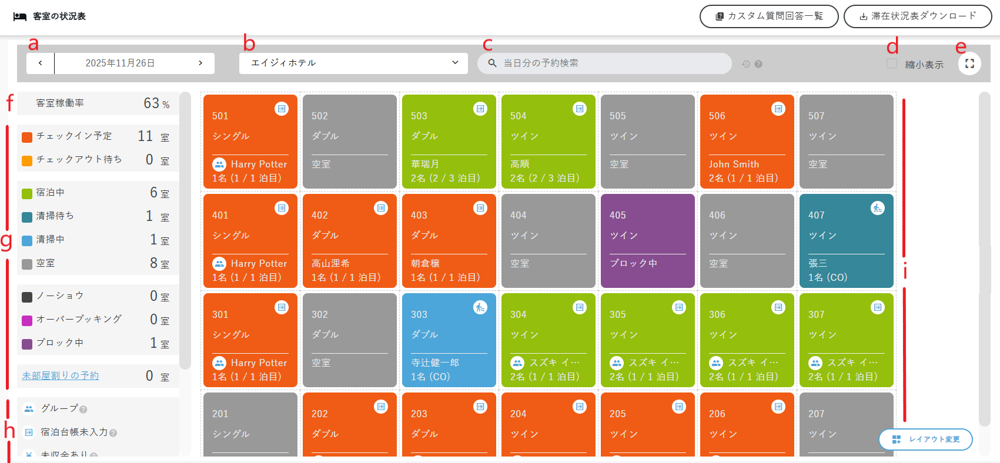
2. 清掃状況を確認・更新する
- 対象日が今日になっているか確認します。
- 対象の部屋番号と清掃予定を確認します。
- 清掃担当者から完了報告を受けます。
- 部屋番号をもう一度読み合わせてから、清掃完了を登録します。右上の「一括操作」を押すと、画面下に操作バー（未手配を全選択／手配する／完了する／確認する）が出ます。清掃が終わった部屋の行にチェックを入れて「完了する」を押すと、確認画面なしで清掃状況が「清掃済」になり、「清掃員から」欄に「［ホストにより完了］」と記録されます（2026/10/09確認）。一括操作は清掃予定表の「日」「週」表示で使えます（月表示では使えません。公式マニュアルより）。1部屋だけなら、清掃予定表でその部屋の清掃予定を押し、〖データ操作〗の「清掃済みに変更する」でも完了にできます（公式マニュアルより。あらきホテルでは未確認）。
- 客室の状況表へ戻り、到着予定の部屋が案内可能か確認します。同じ日に出発と到着がある部屋は、清掃完了にした後で、到着の予約が状況表に出ているか確かめます（客室状況を確認するの注意）。
左メニュー［清掃管理］の下は「清掃予定表／組織設定／手配設定／費用単価設定／請求書発行」です。清掃予定表は、物件を選ぶまで「物件を選択してください」と表示されます。日／週／月の切り替えと、「新規作成」「一括操作」「印刷」ボタンがあります（2026/10/09確認）。
上部に、客室状況（空室／連泊／CO予定／CO済）、清掃状況（清掃待ち／清掃中／確認待ち／清掃済）、手配状況（未手配／手配済）の件数が出ます。表の列は、部屋番号/タイプ、客室状況、清掃状況、宿泊/人数、CO/CI予定、清掃業者/担当者、清掃時備考、清掃員へ/清掃員からです（2026/10/09確認）。

清掃予定は、予約を作ったときに自動で作られます。［清掃管理］→［手配設定］→ 物件の「詳細を見る」の「清掃予定自動作成」が「チェックアウト時のみ」になっています（選択肢はほかに「作成しない」「宿泊中は毎日」）。清掃日は予約のチェックアウト予定日です。10/9 の表が「清掃予定がありません」だったのは、10/9 にチェックアウト予定の部屋が無かったためです（2026/10/09確認）。
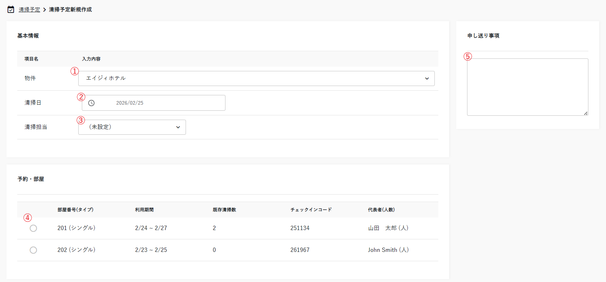
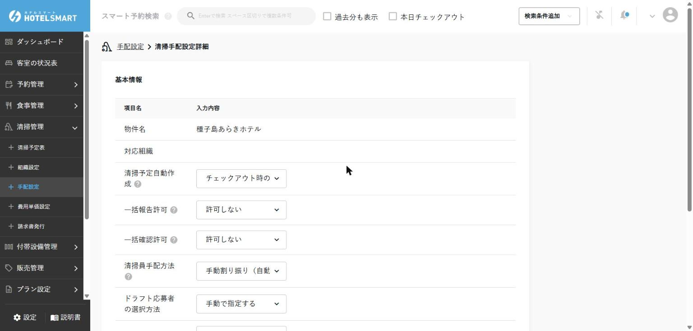
清掃予定表は日／週／月で切り替えられ、月表示では日ごとの件数（未手配・清掃待ちなど）が見られます。開いた直後は「清掃予定がありません」と出て、少し待つと一覧が出ることがありました。部屋が未割り当ての予約は、部屋番号の代わりに部屋タイプ（例：キャビン）が表示されます（2026/10/09確認）。
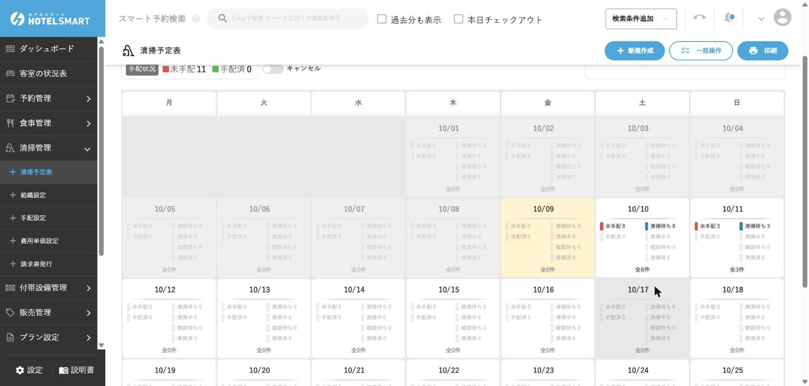
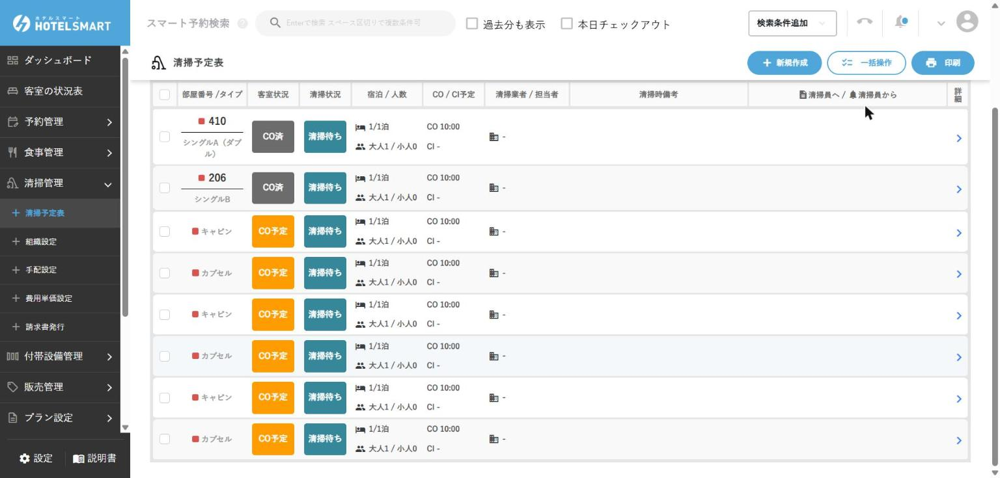
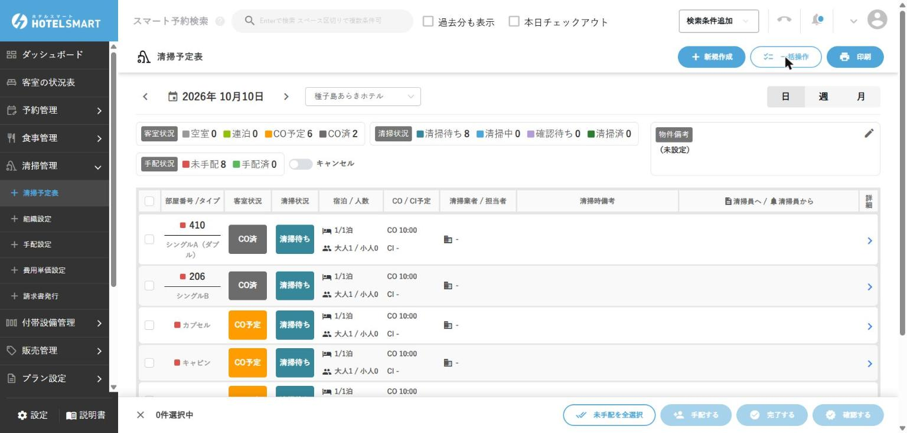
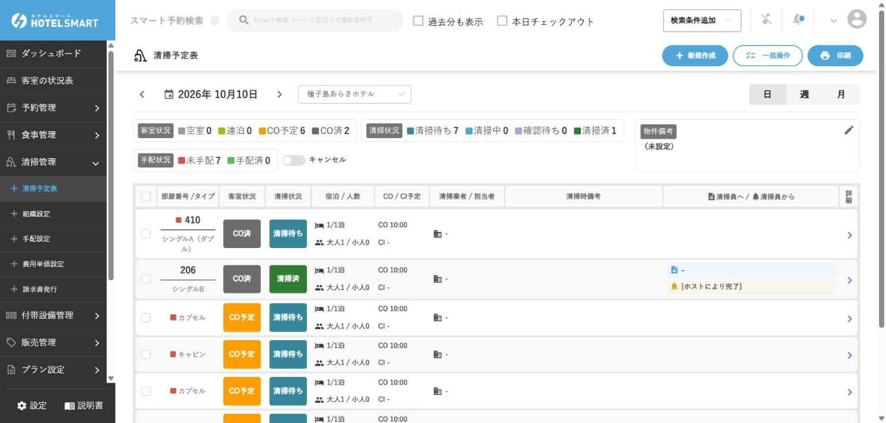
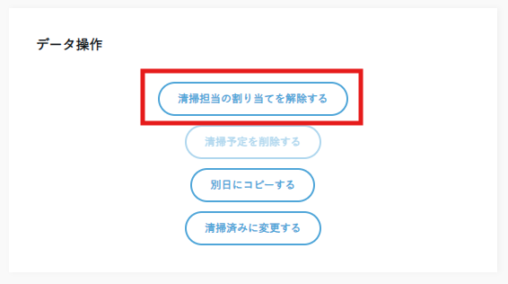
一括操作のボタン
手順4の一括操作は、「一括操作」ボタンのほか、清掃予定のチェックボックスに直接チェックを入れても始められます。日表示では各行の左端、週表示では各予定の左上にチェックボックスがあり、日表示は一番上、週表示は日付のチェックボックスで、表示中の予定をまとめて選べます（公式マニュアルより。あらきホテルでは未確認）。
| ボタン | 何が起きるか（公式マニュアルより） | あらきホテル |
|---|---|---|
| 完了する | チェックした「清掃待ち」の予定を「清掃済」にします | 使います（2026/10/09確認） |
| 確認する | 清掃員から報告があり「確認待ち」になった予定を「清掃済」にします | 清掃員がいないので通常は使いません |
| 未手配を全選択 | 表示中の予定のうち、清掃業者・清掃員が未手配のものにチェックを入れるだけです（状態は変わりません） | 通常は使いません |
| 手配する | チェックした予定に清掃業者・清掃員を割り当てます。選べるのは、その日が勤務可能日になっている清掃員だけです | 清掃員が未登録のため使えません |
清掃予定を別の日に移す・削除する
以下は公式マニュアルより（あらきホテルでは未確認）。清掃予定を押して開く詳細の〖データ操作〗欄から操作します。
- 別の日に移す・増やす：「別日にコピーする」を押し、日付を選んで「コピーする」（元の予定も残す）か「コピーしてこの予定を削除する」（移す）を押します。
- 削除する：「清掃予定を削除する」を押します。清掃担当が割り当てられている予定は、先に「清掃担当の割り当てを解除する」を押さないと削除できません。「清掃を開始する」が押された（清掃中の）予定は削除できません。
- 自動で作られた予定の見分け方：詳細の日付欄に［自動作成］と出ます。
- 予約の日程を変えたとき：手で削除した日の予定が、日程変更をきっかけに復活することはありません。清掃中の予定も、日程変更では取り消されません。
- 予約をキャンセル・削除したとき：手で作った・動かした予定や清掃中の予定も含めて、その予約の清掃予定はすべて「キャンセル」になります（日程変更のときと扱いが違います）。
| 削除 | キャンセル | |
|---|---|---|
| きっかけ | スタッフが手で消す | 予約のキャンセル・削除で自動的に |
| 清掃予定表での見え方 | 一覧から消え、記録も残らない | 手配状況が「キャンセル」として残る |
| できる条件 | 担当が未割当で、清掃を始めていない予定だけ | 手で作った予定・清掃中の予定も対象 |
メーキングリストを印刷する
清掃予定表の1日分を、A4縦の帳票（メーキングリスト）にして印刷できます（公式マニュアルより。あらきホテルでは未確認）。
- 清掃予定表の右上の「印刷」を押します。
- 物件と日付を選び、「印刷する」を押します。
- 印刷プレビューが開くので、プリンターを選んで印刷します。
| 項目 | 出る内容 |
|---|---|
| 出発日 | その日がチェックアウト日なら「○」 |
| 部屋番号・部屋タイプ | 部屋が決まっていない予約は部屋番号が空欄 |
| IN／STAY／OUT | その日に到着する人数／印刷した時点で泊まっている人数／その日に出発する人数（大人と子供の合計。子供がいれば内訳も出ます） |
| IN時刻・OUT時刻 | チェックイン予定時刻・チェックアウト予定時刻 |
| 予約ステータス | 未チェックイン／宿泊中／チェックアウト済み |
| 清掃状況 | 未手配・手配済み・清掃中・清掃完了など |
| 申し送り事項 | 清掃レポートに書かれた申し送り |
- 載るのは、宿泊中の部屋、清掃予定がある部屋、その日に到着・出発がある部屋です。ブロック中の部屋や予約の無い部屋は出ません。
- 人数は、各部屋の予約に登録された宿泊者数です。宿泊者数が実際と違うと、帳票の人数も違います。
- 予約ステータスと清掃状況は印刷した時点のものです。チェックアウトや清掃完了が進んだら、印刷し直すか、画面の清掃予定表で確かめます。
- 申し送り事項は清掃レポートから出る欄です。あらきホテルは清掃員が登録されておらず清掃レポートを使っていないので、空欄になる見込みです（あらきホテルでは未確認）。
以上は公式マニュアルより。
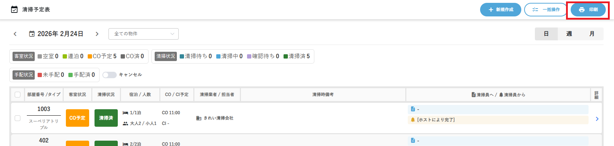
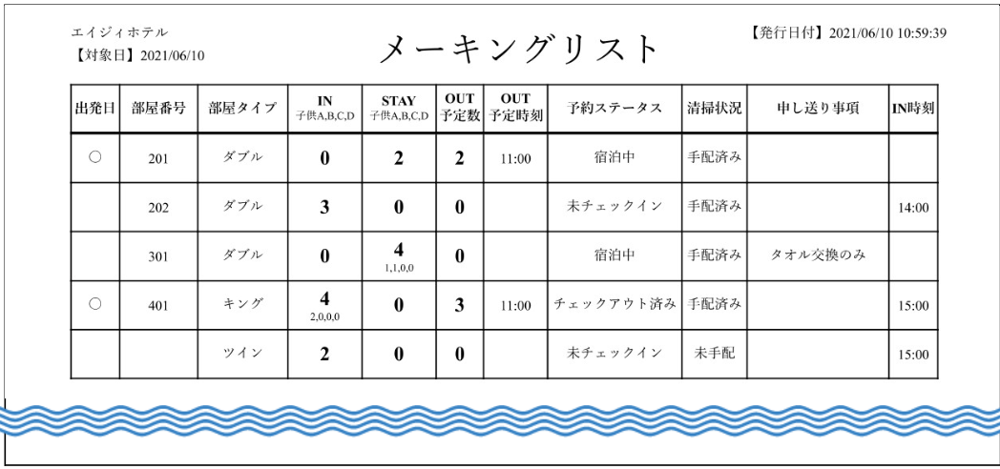
清掃管理の運用パターン
公式マニュアルでは、清掃管理の使い方を「予定をPDF（紙）で渡すかオンラインで共有するか」「施設スタッフが管理するか清掃業者が管理するか」「予定の共有だけか、進み具合まで管理するか、写真つきの報告（証跡）まで残すか」の3点で整理し、次のパターンに分けています。オンライン共有を選ぶと、清掃員が自分の画面で予定を見て、完了報告や詳しい報告を送れます。
| パターン | 共有のしかた | 管理する人 |
|---|---|---|
| A | PDF（印刷）で共有。進み具合はシステムで管理しない紙の運用 | 施設 |
| B〜D | オンライン共有（B：予定だけ／C：清掃中・完了などの進捗も／D：写真・詳細の報告も） | 施設のスタッフ |
| E〜G | オンライン共有（E〜Gの違いはB〜Dと同じ） | 外部の清掃業者 |
3. 滞在中のお客様が部屋を移る
- お客様の予約詳細を開き、移動する日付を確認します。
- 移動先の部屋が空室・清掃済みで、ブロックされていないことを確認します。
- 移動日以降の部屋割りを変更します。
- 宿泊日、旧部屋、新部屋、料金が意図どおりか確認して保存します。
- 鍵を交換し、旧部屋の鍵を回収します。
- 清掃担当と次のシフトへ、旧部屋・新部屋・移動日を共有します。
4. 客室をブロックする
故障、修繕、館内利用などで販売・割当を止めるときに使います。
- 対象の部屋番号、開始日時、終了日時を確認します。1泊分を止めるなら、翌日の0:00をまたぐ期間にします（例：当日15:00〜翌日11:00）。公式マニュアルでは、翌日の0時0分がブロック期間に入っていれば、その日はブロック扱いで在庫が減るとされています。
- 同じ期間に予約が入っていないか確認します。
- 部屋詳細の〖ブロック設定〗で「ブロック期間を追加する」を押し、期間を選んで「OK」を押します。メモ欄に故障などの理由と解除予定を書きます（メモは客室の状況表・部屋割り表に、予約者名の代わりに表示されます）。
- 「変更を保存する」を押して登録します。
- 客室の状況表で、対象期間が紫色の「ブロック中」になったことを確認します。
- 引継ぎへ「部屋・理由・期間・解除判断者」を残します。
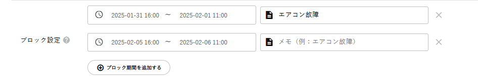

解除するときは、同じ〖ブロック設定〗で行の「×」を押してから「変更を保存する」を押します。画面つきの詳しい手順は、部屋のブロックとブロックを解除するを見ます（2026/10/07確認）。
5. 変更を共有する
| 変更 | 伝える相手 | 伝える内容 |
|---|---|---|
| 部屋変更 | 清掃担当・次シフト | 旧部屋、新部屋、移動日、鍵回収 |
| 延泊・早出 | 清掃担当・会計担当 | 新しい出発日、清掃日（チェックアウト日を変えると清掃予定も自動で移る）、料金への影響 |
| 故障・ブロック | 責任者・清掃担当 | 部屋、理由、期間、代替対応 |
| 貸出品 | 次シフト | 品名、貸出先、返却予定 |
現在あらきホテルで使用しない機能
食事管理は、現在あらきホテルでは食事を提供していないため、通常業務では使用しません。